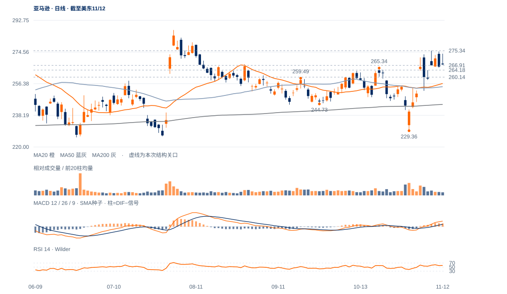

价格支持尚未丢失
11月9日上缺口264.18—266.91截至12日尚未完全回补，现收267.44仍在其上；原260.14受损线也未触发。20/50/200日线均在下方。
未来1—5日偏向高位拉锯，264.18—266.91承接决定修复能否保持；1—3周仍保留偏强修复，但275.34上方持续性尚待确认。

查看大图 ↗11月9日上缺口264.18—266.91截至12日尚未完全回补，现收267.44仍在其上；原260.14受损线也未触发。20/50/200日线均在下方。
9日高275.34、11日高274.87、12日高273.60，上方推进连续减弱；12日上影占日幅88.7%，收盘位置3.7%。
近三日量比约0.78/0.75/0.68；可能是供应不多，也可能是需求退缩。20日OBV方向余额仅约0.005，尚无足够依据把高位停留直接命名为吸收。
下缺口已大量回收、长期均线仍支持、上缺口下沿保持；若上方供应被消化并持续越过275.34，当前需求不足疑虑应降权。